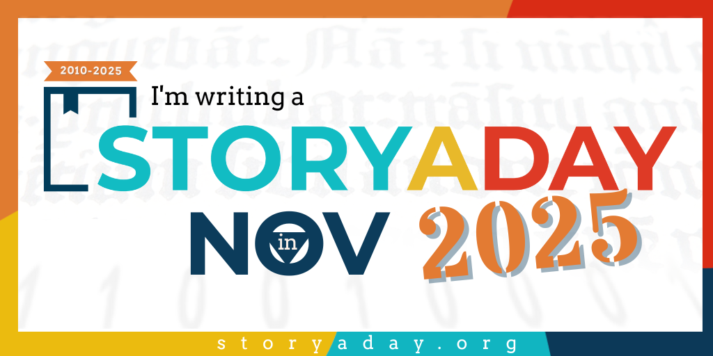

No matter which side of the political spectrum you fall on, we can all agree that the world is nuts right now. Personally, I've also had the added insanity of hubby having to retire suddenly due to medical issues. Needless to say, the stress and chaos all around has been tremendous.
I've been trying even harder to meditate and follow the teachings of the Stoics to try and keep calm and sane (or, calm-ISH and sane-ISH, lol).
So a recent article from The Stoic Gym really spoke to me this month: The Endless Summer Within Us.
It's great advice that I'm trying to incorporate into my daily practice, especially the phrase, "I choose peace!"

This month's writing update.
The Nostalgia story was finished and submitted. "Exit 0: Gas, Food, Old Gods" is now out in the world and looking for a home.
I need to work on resubmitting the other story I had out, but I just haven't gotten around to it yet. It received rejections from a couple of the places where it was submitted, but then I had to also withdraw it from two of the markets it was sent to because they've ended up on the "Writer Beware" lists. So now I'll need to find other places for it to go to. I have one other story halfway edited, so I want to get back to that, as well, and let it start making the rounds.
The main writing plan for this month is to once again do a short story version of NaNoWriMo. Since NaNoWriMo is dead, I'm trying ProWritingAid's Novel November combined with Story A Day's November session. The goal of 1667 words per day, every day, probably isn't sustainable for me beyond these intensive monthly challenges. But I'm hoping it will get me in the habit of carving out some time every day for 500 - 1000 words . . . which is way more than I've been doing for the last couple of years. This is all about getting back into the swing of "being a writer." We will see what works and what doesn't.

What I'm reading this month.
Reading has been an adventure lately. Oy.
I finished Mordew, but I really didn't like it. The first part of the book was great, but it really fell apart in the second half. It almost seemed like there was a gap, maybe, when it was written? Like the first half was written, then the book sat for a while, and then the author came back and wrote the second half. It was a completely different story, it seemed like. And it dragged on forever. Although I managed to finish it, I hated every moment of the last billion pages (or it felt like a billion, anyway).
I finished The Final Girl Support Group, by Grady Hendrix, and I did enjoy that one. Unfortunately, as I am prone to do, I missed the book club meeting discussing it. But the book was great!
I did make it to the first meeting of the Horror Book Club, and that was awesome! It was at a restaurant instead of the library, so that was a little weird, but it was nice to have an adult beverage while we discussed the book.
And more people showed up than there was room for! I'm sure that won't be the case for the second meeting because there are always people who decide, "yeah, not for me." But I'm excited to see where it goes and how many people stick around to be regular members!
For that book club, I am currently working on Buffalo Hunter Hunter, by Stephen Graham Jones. I am LOVING it. It took me a little bit to get into it, which is unusual because I LOVE SGJ's work. But now I'm vested and enjoying it. I was a little lost at the beginning, so I think this is one that deserves a re-read. I think I will enjoy it even more the second time around.
My borrowed book this time was Chain Gang All Stars by Nana Kwame Adjei-Brenyah, and I absolutely loved it. It was definitely the gold medal winner this time around. The premise is very much like the "The Running Man." Criminals are being forced into life-and-death battles as a form of entertainment, this book takes a more literary/sociological perspective on it, focusing on the problems of our real-world justice system and the racial and social bias within it. This one wins the "Damn, I wish I'd written that" award. As an illustration of how good I thought it was, this is one of those books where I originally borrowed it but plan to buy it and add a copy to my personal library. High praise, indeed.
It's a real joy to have two books that I'm really enthusiastic about and a third that I enjoyed, even if I'm not super ecstatic about it. Too often, I can barely get through a book (or don't at all, like with A Stranger in a Strange Land) or it's just "meh." So it's great to have a run of really good books.
Which brings me to the last book I'm working on, lol. I don't know if I'm going to make it through it. It's a book chosen for our "distance learning" book club. The university is putting forth a big effort to build a feeling of community among the distance/online students, which is AWESOME. The book, however, stinks. The really sad part is that I already had the book in my Kindle library, long before the book club. While the synopsis sounds interesting, this wasn't a book I would have bought. I had to have gotten a free copy through a promotion, first reads, or as a giveaway. So now I'm really, REALLY glad I never paid for that book!
What I'm learning this month/class report.
I am still really enjoying my class this semester and glad I decided to choose it. Registration for next semester is this week, and I've decided to retake the computer science course, "Social Implications of Computer Technology." It will fulfill a credit toward my computer science minor, and I think it's a natural choice after the sociology course I'm taking. And it will nice to get an "update" from the first time I took the class, 30 years ago.
The funny thing? The class is using the same textbook. Not the same edition, of course, just the same book, fifth edition. I've been taking classes off and on for a lot of years, and this is the first time I've seen the same title used for this span of time.
And this was a book I kept. So I still have the first edition of the textbook for this class. It's useless, other than as an interesting artifact, lol. Back in that first edition, not only did we not have AI, we didn't have social media or smart phones. So a lot has changed! I'm looking forward to seeing how the class pans out.
I'm kind of focusing my major/minor on "society and technology," which is a concentration that the university does offer in grad school: Master's in Human-Technology Interaction. But they don't offer a degree for it in undergraduate studies, and I'm not interested in grad school. So I'm trying to pick undergrad classes from different disciplines that relate to that focus. I plan on taking some AI courses eventually, as well.
On the other learning fronts, most of my stuff is the same. The only thing that may change is that I may drop Duolingo.
Duolingo has switched from "lives" to energy, and I hate it. Even without getting anything wrong, you lose one energy point every time you answer a question. If you get x amount of questions right in row during a regular lesson (not the stories or listening sessions), you get some energy back (5 points, I think).
You used to be able to do multiple lessons in a day, as long as you didn't get any wrong. Now, with this "energy" and it being depleted with even correct answers, it's impossible to do several lessons in a day because you are guaranteed to run out of energy. And while you do gain some back, you don't gain as much as you lose. So every lesson leaves you with a deficit. I think during yesterday's session, I got one answer wrong and was able to complete two lessons before running out of "energy."
I don't like it. And I'm actually thinking about dropping it. The lives-to-energy change was just the final straw. They've made a lot of changes to it over the last year that are annoying and even creepy at times. I've stuck with it this long because it's awfully hard to give up that 585+ days-long streak of learning Spanish. But this "energy" nonsense might be the thing that pushes me over the line.
This month's playlist. The ten songs I'm listening to on repeat.
This month's pondering/share/rant.
This is my birthday month. I won't tell you how old I am, but I was definitely feeling my age for a bit these last four to six weeks.
One evening a few weeks ago, I decided to take my book out to the writer's deck and read under the gazebo while listening to the beautiful rain pattering down. Getting so close to winter, rain has become a precious thing. Unfortunately, I misjudged the surface of the writer's deck.
Because of all the vines that make up the canopy over the writer's deck, the deck is prone to green-algae and moss. That's no big deal, because I'm used to it and proceed with caution. This time, however, I noticed that the deck was looking really dark colored. I just assumed it was dirt that had blown in. We had a few wind advisory days, so it wasn't surprising that some of the rich, black farmland ended up coating my deck.
It was NOT dirt. It was slime mold. And it was the slickest thing I've ever stepped on.
I got one foot out the patio door and onto the deck, and I slipped like a cartoon character on a banana peel. I literally went completely horizontal in the air, no part of my body in contact with any surface, and crashed down. It felt like being body slammed by Hulk Hogan. If I had been Wiley Coyote, I think I could have held up a little "HELP!" sign in the time between the slip and the crash.
Worse yet, because I had been mid-stride, and my left leg had still been "in the house" and not in contact with floor, my knee was bent back behind me when I landed, to the point that when I hit the ground, my left heel kissed my left ear.
I am not that flexible normally!
At least I didn't feel like a complete clumsy dolt because the dogs all ran out to see if I was okay and they Bambi'ed this way and that because they also couldn't get any traction on the slimy deck. So at least it wasn't my ineptitude...at least, not completely.
But it HURT. It happened on a Friday, but I didn't want to sit around in an ER, so I waited to see a doctor until Monday. She did an x-ray, but nothing was broken. That, in and of itself is a miracle. That was a hard fall, and I fell into a ridiculous pretzel-position. I should have shattered like glass!
But the doc was worried that I had torn ligaments and what not, so she said the typical insurance thing is to wait ten days, and if it's still a problem, do an MRI. Well, I have never had an MRI, and don't want one. And my leg, while still painful, regained some range of motion.
So I rested it for a few weeks. After a bit, I started doing some of the rehab exercises I found online. Over time, the pain got less. I still don't think it's back to 100%. It still seems to get fatigued easily and still hurts when I try to bend it to either side (as in sit with my legs curled under me, out to the side, on the couch, or bring my left foot up and rest it on my right knee). But I am back to walking 2.5 miles a day. I'm just a little stiff afterwards, which makes me feel my age.
I'm looking forward to getting it back to 100% though, so I can go back to the illusion of how old I am in my head: 33. Rofl.
That's it for this month. Until next month, Stay Spooky, my friends!

~~Here be monsters . . . and corgis.~~